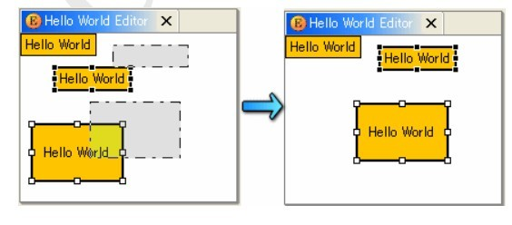

然后，我们就要在 EditPart 的 active()中注册监听器，还要在 deactive()中删除监听器。同样的道理，我 们创建一个抽象的 EditPart 类，来注册监听器。
package gef.tutorial.step.parts;
import gef.tutorial.step.model.AbstractModel;
import java.beans.PropertyChangeListener;
import org.eclipse.gef.editparts.AbstractGraphicalEditPart;
public abstract class EditPartWithListener extends AbstractGraphicalEditPart
implements PropertyChangeListener {
@Override
public void activate() {
super.activate();
((AbstractModel) getModel()).addPropertyChangeListener(this);
}
@Override
public void deactivate() {
super.deactivate();
((AbstractModel) getModel()).removePropertyChangeListener(this);
}
}
然后，我们的 HelloEditPart 要派生自这个抽象类，然后在模型改变时刷新视图。注意这里用到了我们 前面设置的变量 P_CONSTRAINT。通过这个变量我们才知道是要改变 HelloModel模型的约束，下面的章 节中我们还要改变文本。
public class HelloEditorPart extends EditPartWithListener{
.......
@Override
public void propertyChange(PropertyChangeEvent evt) {
if (evt.getPropertyName().equals(HelloModel.PROP_CONSTRAINT))
refreshVisuals();
}
.......
}
再运行一下吧，绝对没问题了。
